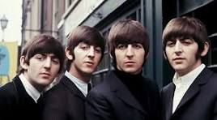

Were the beatles really that good?
♥(no)♥

The beatles are a endlessly praised and respected band, but are they really as good as they seem? Personally, I'd say no, it doesnt seem to me that they have the kind of genre defining and boundary breaking music you would expect from one of the "greatest bands of all time". Surely if they are so impressive their music would hold up? While many songs do, many dont, each classic is sandwiched between a forgettable uninspired filler track. I have no issue with this, but it has to mean something when contexualized against the ACTUAL greatest artists of all time
If you compare them to somone like Micahel Jackson, Prince, or Nirvana, you'll find popular artists that make better music, and if you turn to less well known artists, Elliot Smith, Nick Drake, Fiona Apple, then you'll find much higher qualiy there too. Ultimately, the beatles legacy ought to be regarded as a beloved band, with great music. A perfectly acceptable mark on music, not a cornerstone of music that defined the meduim. With great respect, the beatles are overrated.